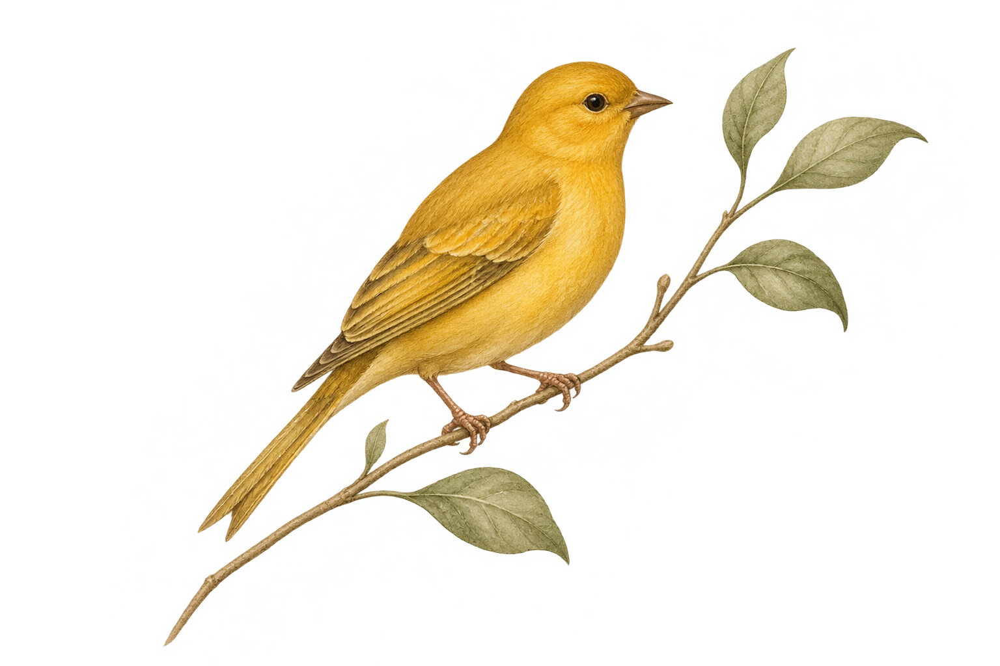
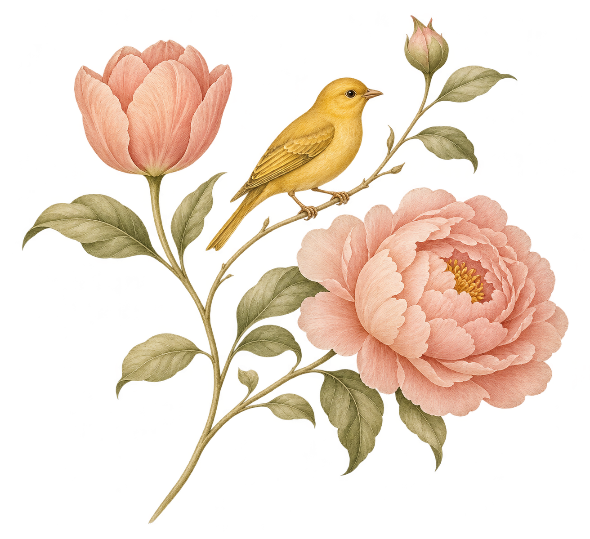

a little sign of hope
THE SIGNATURE
A bright companion
A golden canary, carrying a quiet reminder that small things can hold a little hope.
A place for thoughts,
plans & little joys.
Embrace and grow
through every season.

UNDATED · AT YOUR OWN PACEEvery lovely story begins with an open page.
SIX PAGES. A LITTLE WORLD OF YOUR OWN.Embrace and grow
through every season.
For the quiet moments. The fresh starts.
And all the beautiful in-between.
We believe we all deserve a little room. Room to pause, to put pen to paper, to try again. Room to find something lovely in an ordinary day.
Room to Bloom brings that feeling to the things you reach for — a journal, a favourite mug, a gift chosen with care. Gentle reminders to embrace where you are, and grow from here.
There’s room for you here.“There is no rush to become.
You’re already growing.”
A familiar little bird. A garden in bloom. A gentle way of seeing the everyday.
A golden canary, carrying a quiet reminder that small things can hold a little hope.

Tulips for fresh beginnings. Peonies for the beauty of opening up in your own time.
Upright, graceful letterforms. A warm and familiar signature, wherever it appears.
A familiar signature.
Even on the pencil that starts your story.
Warm cream. A little sunshine. A blush of petals. A garden’s gentle green.
Cream makes room for the details. Sage gives the collection its calm, familiar signature.
Butter yellow brings the bird to life. Petal blush adds a gentle, welcoming finish.
Places for your thoughts. Keepsakes for your home. A little comfort, thoughtfully given.
A little space for what’s on your mind.
A warm reminder to take your time.
A little encouragement to carry with you.
For someone who deserves a little lovely.
Your memories, with a familiar little signature.
A soft little home for precious things.
A few stems. A little room to bloom.
A little sunshine to take into your day.
Showing all 8 collection concepts.
A first look at how the brand could come to life. Each piece is a visual concept.
Embrace and grow through every season.